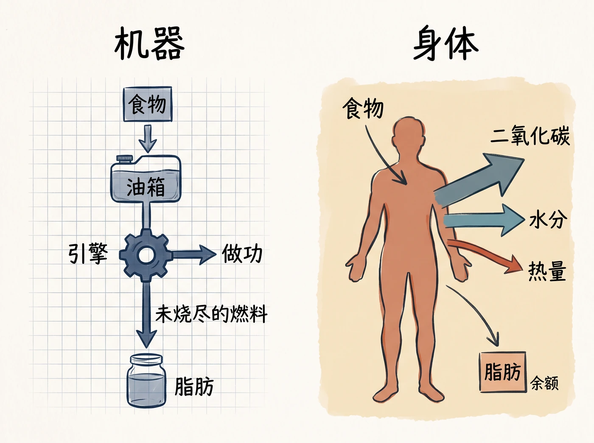

目录页左上角另外记了五条，没有挂到具体章节：断食法、双标水、基础代谢、高运动量并不带来多消耗、有限能量消耗模型。
「这页是我总结的几个除了知识类的东西以外，现代人和原始人，也就是哈扎人的文化冲突……这几个点我觉得挺有趣，可以之后延伸作为一个专题。」
第 2 章那处旁边另写了「无线电波」与一句问话：走过去你要多长时间。
不过，根本问题在于，我们有关能量消耗的知识大错特错。自 20 世纪开展关于新陈代谢的现代研究以来，学界错误地将我们的身体比作机器：我们以食物的形式补充燃料，通过锻炼来发动身体的引擎，燃烧食物带来的能量，未烧尽的燃料则会变成脂肪囤积起来。
这段话被蓝笔整个框住。要配的图，就是把「机器比喻错在哪儿」画出来：左边是机器那条单向的燃料链，右边是身体实际的三条出口——能量大部分随二氧化碳呼出去，一小部分走水分，热量只是其中之一，剩下才是脂肪的余额。

能量总是相同的。你快跑 3 英里和慢跑 3 英里消耗的能量相同，因为你快跑时燃烧能量的速度增加了，但跑步的时间却减少了。
快跑让人感觉更累，这是因为疲劳感与我们身体做功的速度相关，而不是做功的多少。
……走到新陈代谢的临界点时，就会自然而然地跑起来。
住在快节奏的大都市的人和去野外采集狩猎的哈扎人的走路速度，会比他们的最佳能量消耗临界速度快一点儿。显然，在必要的情况下，我们愿意多消耗一些能量以减少花在路上的时间。
速度一改，每英里的能耗就变；人会自动卡在「最省油又不磨蹭」的那个速度上。哈扎人比临界点略快一点——因为路上花的时间也是成本。这一处和目录页上标的第一条「时间观」，正好接得上。